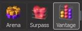
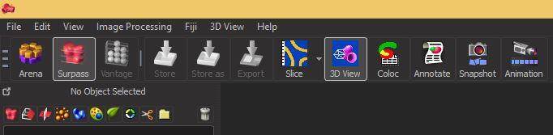

PART 2: GETTING STARTED IN IMARIS
Opening Images
The Imaris software can read and open many different image formats, including standard formats such as .tif and .jpg as well as bio-formats from microscope/image capture software. It will automatically read the dimensions (channels, time, z-stacks) and display them appropriately in the software.
When using Imaris in Surpass mode you can open images by ‘dragging and dropping’ them into the Imaris window, or by going to File -> Open and selecting your file from the explorer window.
To add files to Imaris in Arena mode see the section on Arena below.
Rearranging Image Dimensions
On rare occasions Imaris will read the dimensions of your image in the wrong order and display them incorrectly, for example displaying time points as 3D z-series or different channels as time points.
You can easily correct this by going to the Image Processing menu and selecting the dimensions you wish to swap; either Swap Time and Z or Swap Time and Channels.
Imaris Modes
There are 3 different ways to view your data in Imaris, which we will refer to here as “Operating modes”. These are Arena Mode, Surpass Viewing Mode and Vantage. You can switch between these modes by selecting the corresponding icon from the top left panel of the main Imaris window.

When you first open Imaris v8 it will start in Arena Mode. In the Arena you can pre-load all of the images you want to examine, and sort them into different experiments and groups. Arena is not present in earlier version of Imaris.
In Surpass Viewing Mode you can visualise the selected images in 2D, 3D or 4D (time series only), navigate around the image and carry out quantification.
In Vantage you can generate graphs and plots from your image data. This is rarely used, as most people export quantification data to other statistics programs such as Excel, SPSS or GraphPad Prism. As such the use of Vantage is not covered in the Imaris Basics workshop.
Using the Imaris Arena
To use Arena, select your workspace or create a new one by clicking the New Assay icon.
Give the “assay” or experiment folder a name and click OK.
This will generate a new section in the Arena workspace where you can add images and groups.
You can now add images by dragging and dropping into the Arena workspace or clicking the new Image icon and selecting your file from the explorer window.
You can group your images together (ie: control vs treatment or by experiment date) by creating a new group within the workspace. Click on the New Group icon, name the group and click OK.
Drag and drop your images into the group icon in the workspace to move them.
To delete an image, group or assay from Arena select the image or icon and click the Delete button in the panel.
To open a specific image from Arena in the Surpass Viewing Mode, double click the image.
Options in Surpass Viewing Mode
In Surpass Viewing Mode your data will open as a single image in 2D, 3D or 4D, depending on the data type. This is called the 3D View.

You can choose to work in this 3D View mode or you can select options from the Slice/Easy 3D icon. You can switch between the two easily using the respective icons in the top panel.
From the Slice/Easy 3D Menu you can select several different viewing options from the drop down menu, accessible by clicking on the small down arrow.
Slice will show each z-section of the 3D image as a single panel and allows you to scroll through the section using the slider on the left hand side of the window.

Another popular option is the Gallery View. This shows all slices from a 3D image in order in a gallery panel.